작업 흐름
- 입력
- 주제 하나 — 사람이 있는 장소(누가, 어디서, 무엇을, 어떤 날씨에)
- 브리프
- 배경(지평선 · 땅 · 안개), 주인공(바라보는 방향, 걸음, 손에 든 것, 키), 중경 도형 2–4개와 원경, 구멍 너머로 보이는 것, 그리고 선의 길(시작점, 태그별 순서, 이동마다의 근거, 우회, 반영과 지그재그 땅, 끝)을 적은
BRIEF.md - 장면
scene(S): 깊이를 가진 도형들. 키트(전봇대 · 가로등 · 집 · 탑 · 스카이라인 · 소나무 · 숲 · 산등성 · 새 · 부두 · 배 · 우산 · 낚싯대 · 등롱)와 작품 안에서 새로 그린 도형, 관절 한계와 두 뼈 IK가 있는 사람 리그- 선
line(L, S): 한 번의start뒤 계속 이어지는 선. 윤곽 따라가기(멈췄다가 우회 후 이어 그리기, 모서리 고리), 직각 계단 · 갈고리, 이어진 고리, 지그재그 채우기 · 반영, 되짚기, 멈춤- 확인
- 선 시트(시간 순 색, 놓친 윤곽은 빨간 점선), 캐스트 시트(좌우 · 앞뒤), 끊김 없음, 어휘(고리 · 지그재그 · 윤곽), 도형 덮임, 손 같은 속도 변화, 펜촉이 화면 안, 관절 · 발 · 손 닿음, 밝고 흐린 사진, 마무리, 결정성
- 출력
- 30fps 1080×1920 MP4(유리 위 펜촉 소리 · 닿는 소리 · 잔잔한 피아노 합성), 라이브 페이지
node one-line-drawing/scripts/new-piece.mjs my-piece
cd my-piece
node ../one-line-drawing/scripts/render.mjs piece.html --line
node ../one-line-drawing/scripts/render.mjs piece.html --cast
node ../one-line-drawing/scripts/check.mjs piece.html
node ../one-line-drawing/scripts/render.mjs piece.html요구 사항: Node + Playwright Chromium, ffmpeg. 네트워크와 GPU가 필요 없습니다(55초 영상을 CPU 4코어로 약 2–3분). 단계별 순서는 SKILL.md에 있습니다.
샘플
브리프로 설계한 두 장면, 비 오는 골목 국숫집 「Last Bowl」과 안개 낀 호수의 낚시꾼 「Last Cast」의 순간들입니다. 카드를 누르면 새 탭에서 그 순간부터 영상이 재생되고, 브라우저가 사진과 선을 직접 그립니다.
Last Bowl 1080×1920 · 54초 · 원본에도 시작 작품에도 없는 주제로 만든 예제
우산을 든 사람이 비 오는 골목 끝 마지막 국숫집으로 걸어갑니다. 국숫집의 차양 · 카운터 · 등롱과 골목 벽은 작품 안에서 새로 그린 도형입니다. 등롱과 냄비는 기둥 사이 구멍 너머에 있어 각자 도형으로 나누고, 차양 윤곽을 따라가다 멈춰 내려갔다 돌아오는 우회로 그립니다. 우산도 손까지 내려와 사람을 한 바퀴 돈 뒤 손잡이를 타고 올라가 나머지를 마저 그립니다.
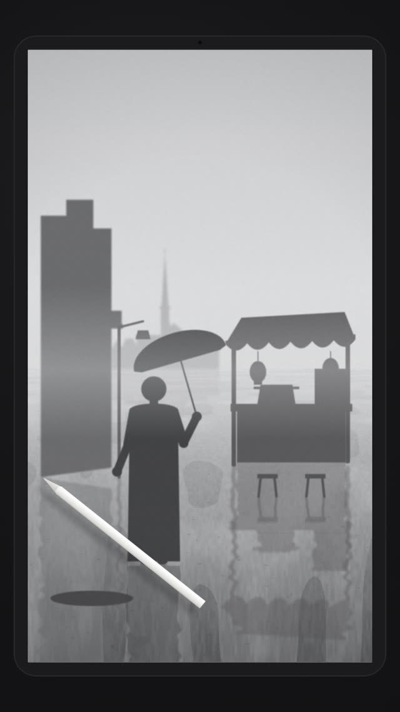
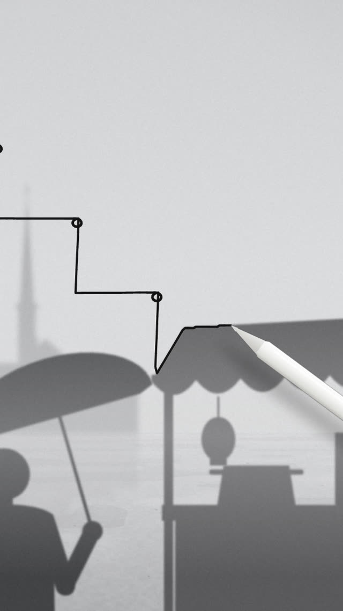
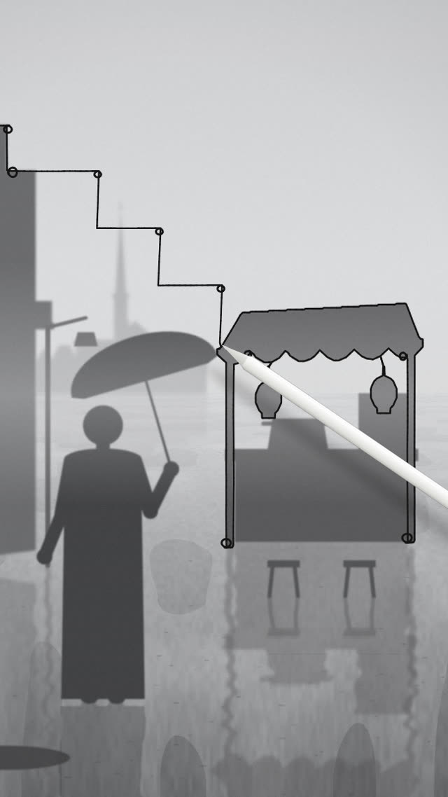
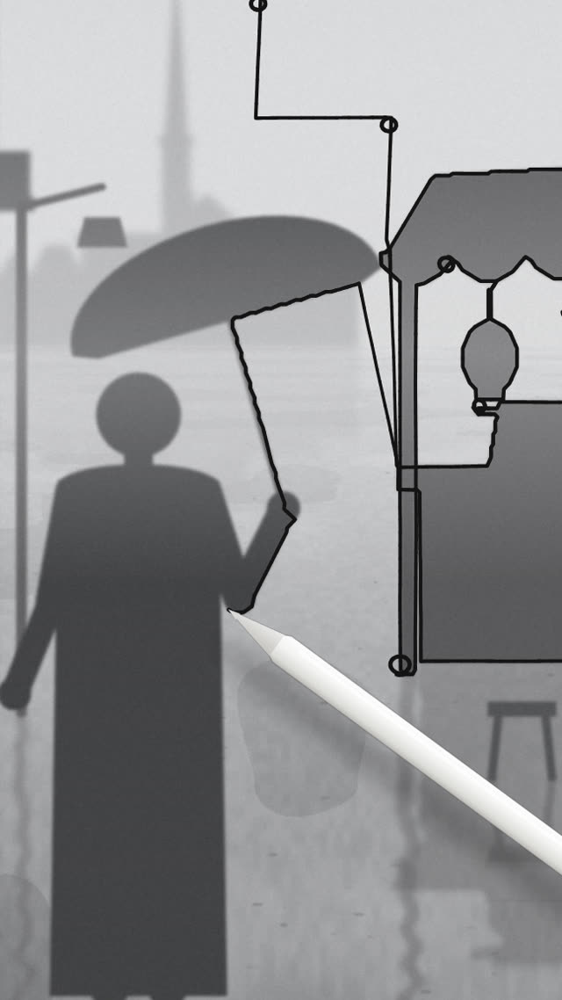
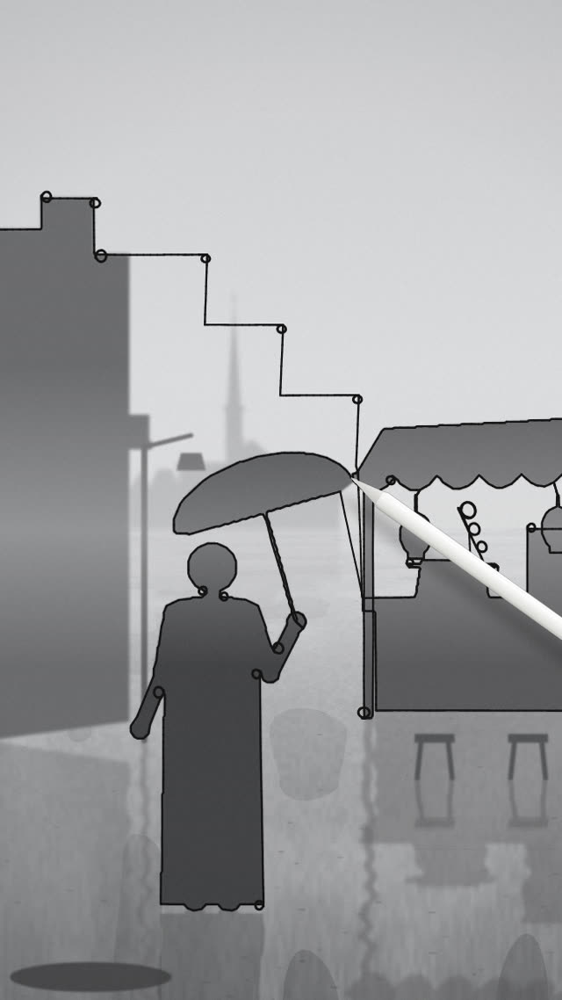
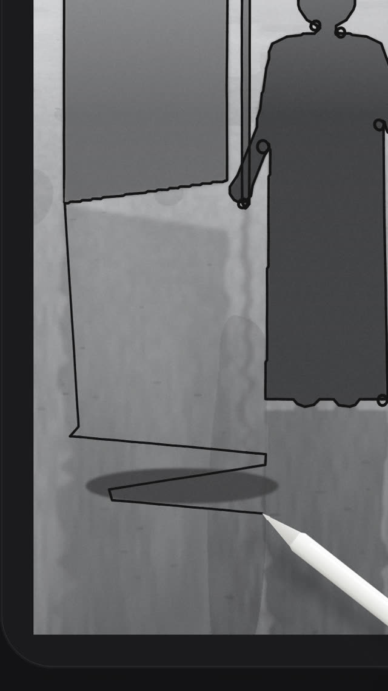
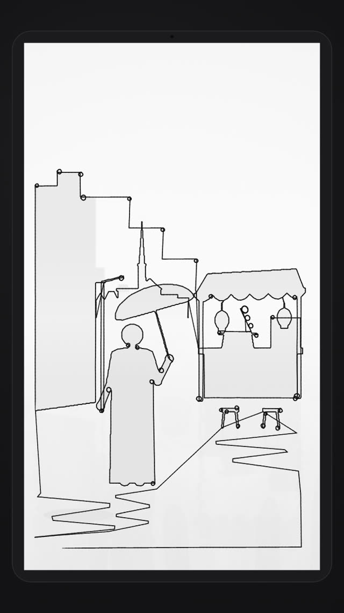
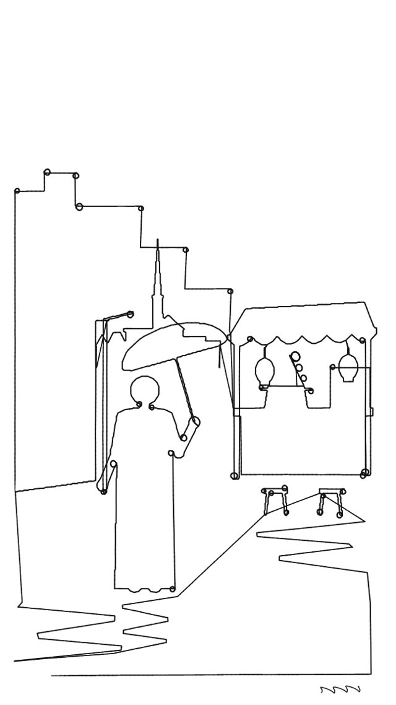
Last Cast 1080×1920 · 52초 · 시작 작품
안개 낀 호수, 부두 끝에서 낚싯대를 드리운 사람입니다. 위쪽 테두리는 직각 계단과 고리로 갈매기 두 마리를 지나고, 오른쪽 가장자리를 타고 내려와 먼 소나무 숲과 산등성을 따라갑니다. 부두를 따라가다 사람의 발에서 멈추고, 사람을 돌다 손에서 낚싯대를 타고 올라가 낚싯줄 끝 찌까지 내려갔다 되돌아온 뒤, 사람과 부두를 마저 그립니다. 반영과 물은 지그재그입니다.
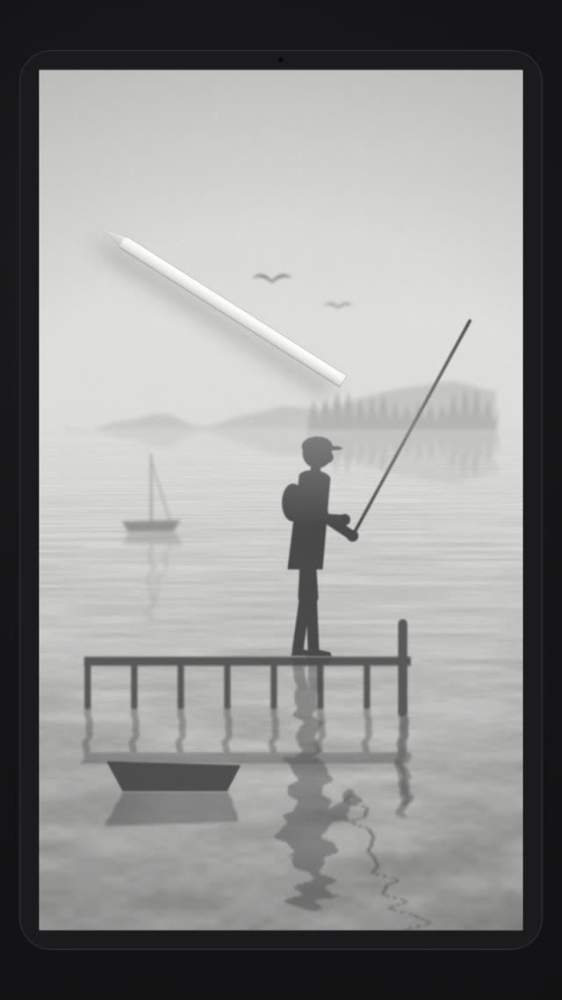
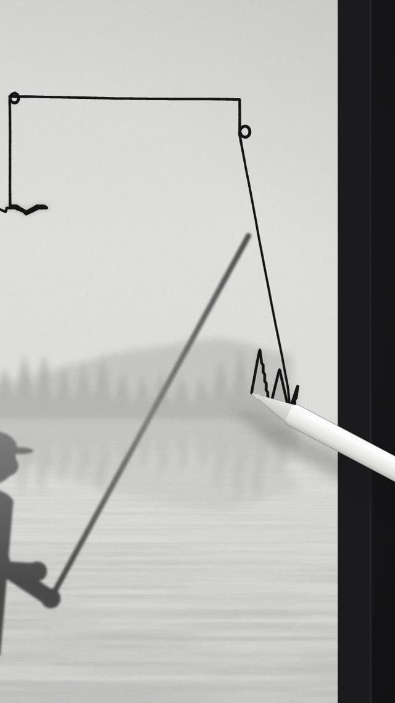
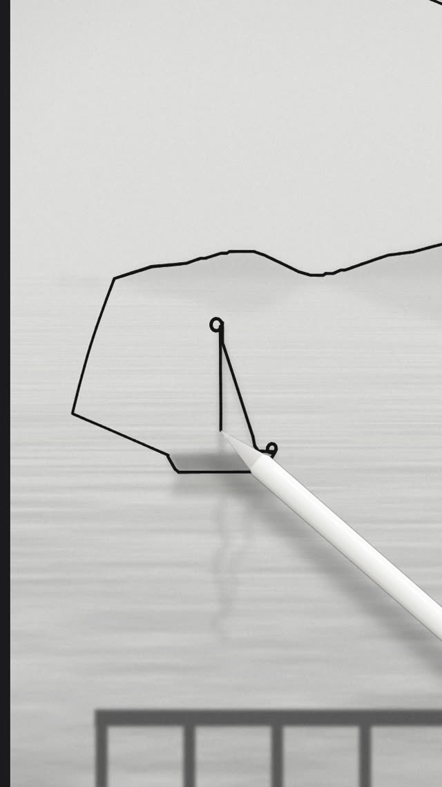
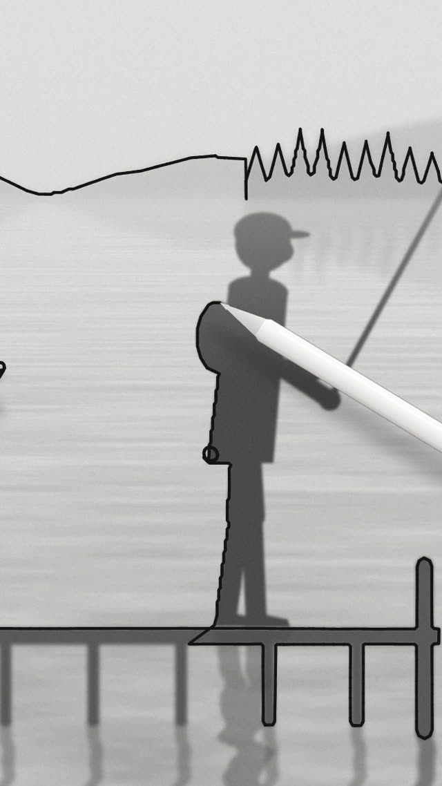
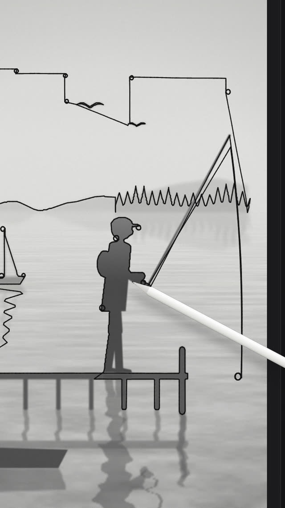
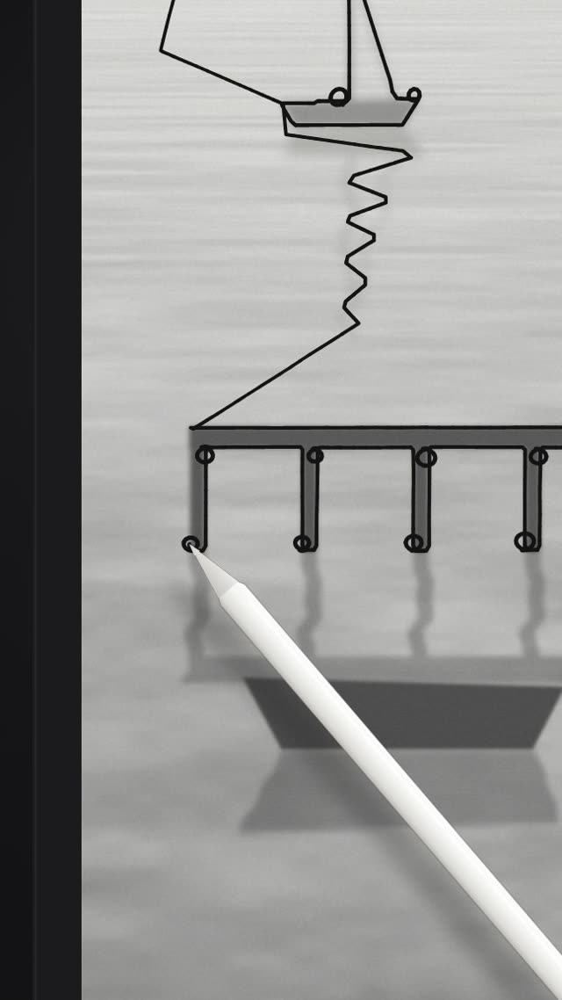
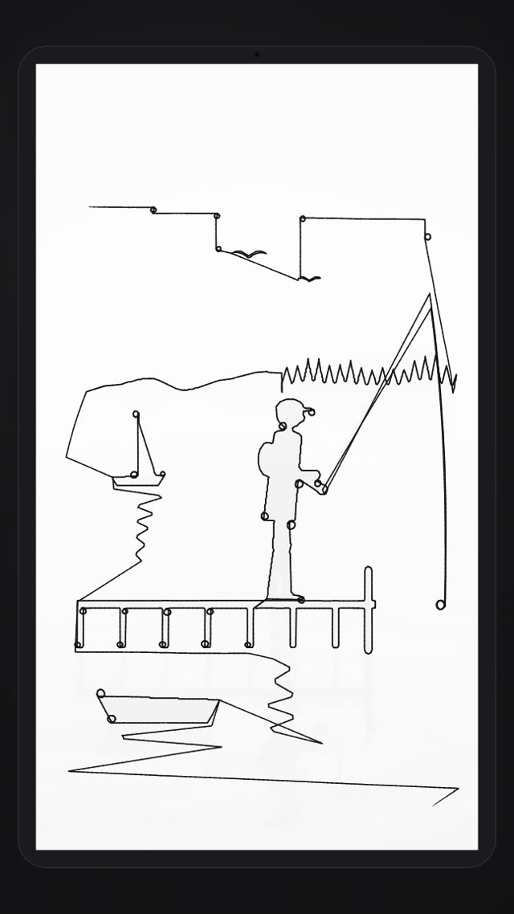
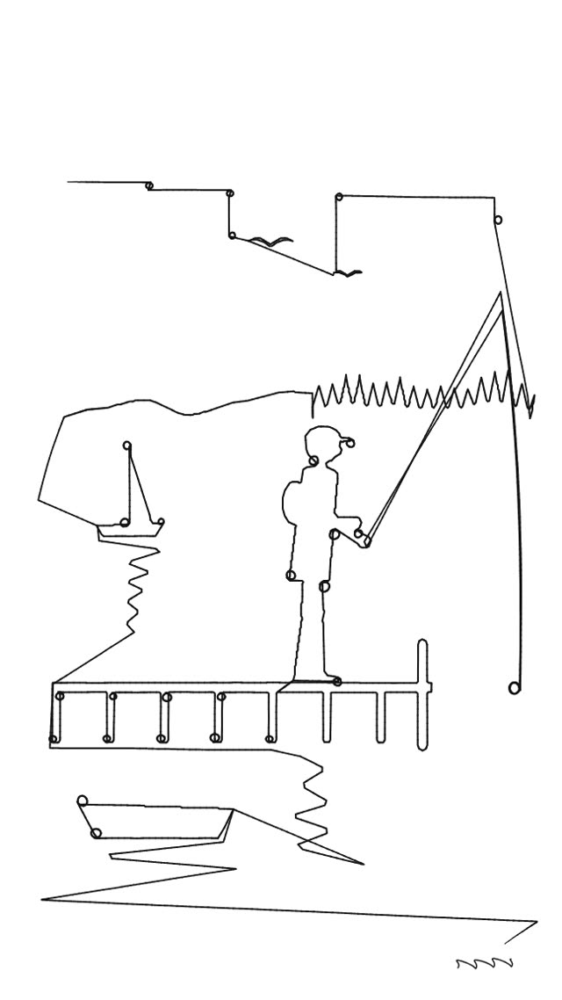
실제 작품
이 레포에서 만든 스킬입니다. 醉清风(@Xin78787)이 X에 올린 62초 세로 영상(태블릿 위 안개 낀 길 사진을 따라 콘트라베이스를 멘 사람, 전봇대와 전깃줄, 젖은 길의 반영, 먼 마을과 첨탑을 펜을 떼지 않고 선 하나로 그린 영상)이 출발점입니다. 이 스킬은 그 형식(선 하나, 그 선의 어휘, 아래의 흐린 사진, 펜촉을 따라가는 카메라, 마무리)만 가져옵니다. 원본의 사진과 인물, 작가의 손과 서명, 음악은 쓰지 않았고, 두 장면은 모두 이 레포의 것입니다.
링크
- SKILL.md 워크플로
- 폴더 lib · scripts · references · templates · examples
- README.md 빠른 시작
- references/SOURCE.md 원본 영상의 구성, 가져온 것과 가져오지 않은 것
- references/BRIEF.md 브리프 틀과 스틸 채점 기준
- references/LINE.md 장면 · 사람 리그 · 선의 API와 선의 길을 짜는 법
- references/LOOK.md 단계, 고정 값, 소리
- references/LESSONS.md 겪은 문제와 해결